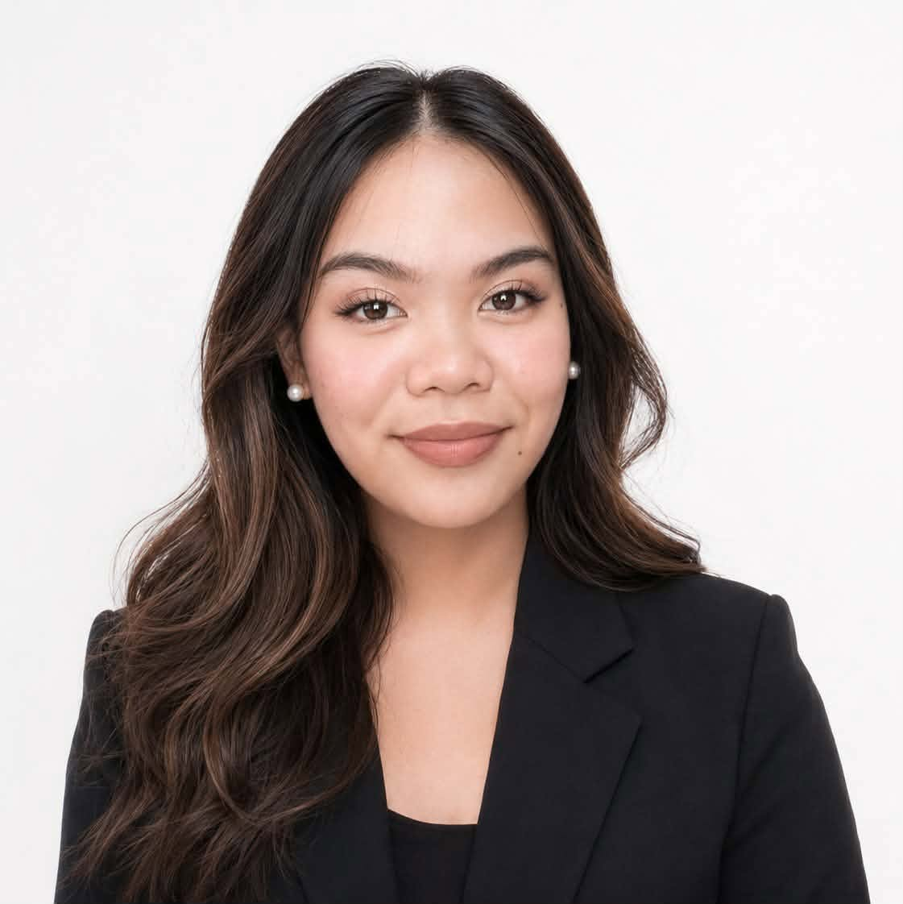

Office Administration Student
Detailed-oriented Office Administration graduate with strong organizational, communication, and technical skills developed through academic coursework and interships. With a solid educational bakcground in office management. I am well equipped to provide smooth office operations and handling administrative tasks with accuracy and confidentiality.